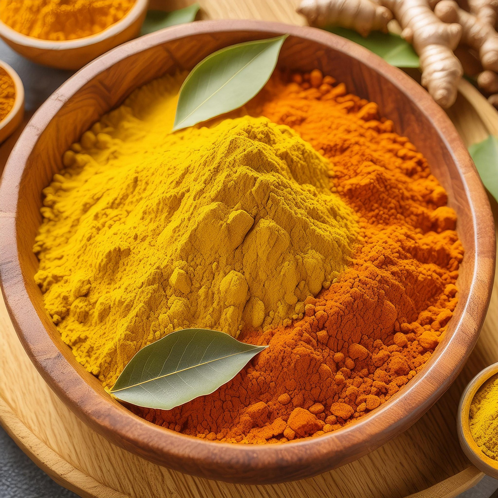
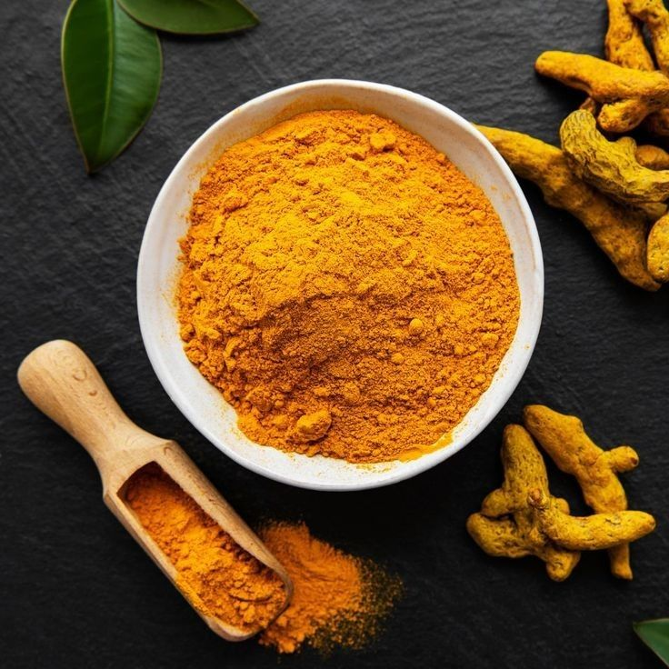
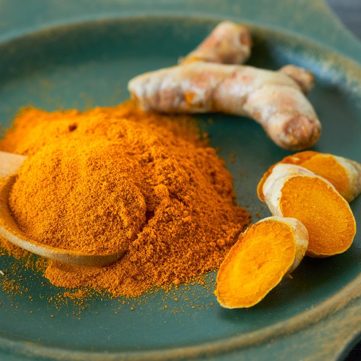
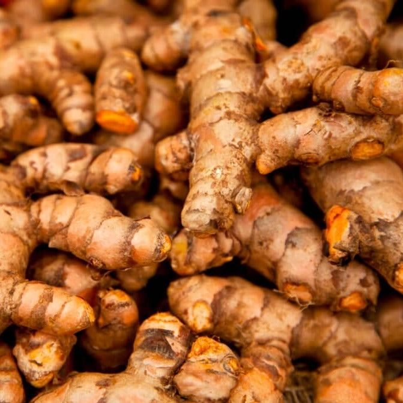

Avani Turmeric is a trusted name in the production and supply of high-quality turmeric powder, committed to delivering purity, freshness, and authentic taste. Our turmeric is carefully sourced from selected farms where traditional cultivation practices are followed to ensure rich color, strong aroma, and high curcumin content. We believe that quality begins at the source, and we maintain strict standards at every stage of production.

Avani Turmeric follows a hygienic and natural processing method that preserves the nutritional value and medicinal properties of turmeric. From cleaning and drying to grinding and packaging, every step is monitored to maintain purity and consistency. We do not compromise on quality, ensuring that our customers receive turmeric powder that is free from adulteration and artificial additives.

Avani Turmerics stands for quality, honesty, and customer satisfaction. Our turmeric powder is known for its vibrant color, strong aroma, and high curcumin content, making it ideal for daily cooking as well as medicinal use. We serve households, retailers, and wholesale buyers with the same level of care and commitment, ensuring reliable supply and superior quality.